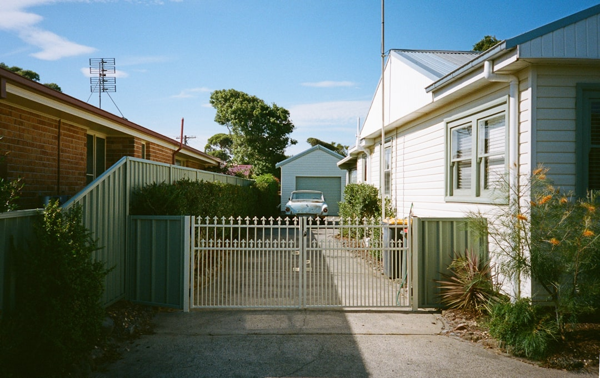

For local buyers, kitchen renovation adelaide means turning a rough idea into a finished room without chasing five separate quotes or coordinating trades yourself.
Kitchen Renovation Adelaide Explained
Kitchen renovation cost in Adelaide is driven mostly by scope. A facelift that keeps the existing layout and swaps doors, benchtops, splashbacks and handles sits at the lower end of the range. A full remodel with new cabinetry, stone benchtops and appliance relocation sits higher, and a butler's pantry or open plan conversion that involves structural change or moving services sits higher again.
Before requesting quotes, decide which category the job falls into. It changes who you should be talking to, how the quote should be itemised, and how long the job realistically takes.
Older homes versus newer, open plan builds
Adelaide's housing stock varies widely by suburb, and that affects renovation planning. Heritage stone cottages in the inner suburbs often have narrower kitchens, load-bearing walls and older wiring or plumbing runs, which can add scope once a wall comes out or services need relocating. Newer or already open plan family kitchens in the Hills tend to involve less structural surprise, so the work is closer to a straight cabinetry and benchtop job.
Ask a prospective renovator whether they have worked on a home similar in age and layout to yours. Someone experienced with heritage stone construction will price and sequence a demolition very differently to someone who mostly works on newer builds.
What a typical renovation timeline looks like
Most full renovations run 8 to 14 weeks from start to finish, though a straightforward facelift can move faster since it skips demolition and re-plumbing. That window covers design sign-off, cabinetry manufacture, and sequenced trade work: electrician, plumber, tiler and stonemason, broadly in that order.
- Design and layout confirmed before cabinets are ordered
- Cabinetry and joinery built off-site while site prep happens
- Trades run in sequence, not simultaneously, to avoid clashes
- Stone benchtops templated after cabinets are installed, then fabricated and fitted
Ask for a written schedule, not a verbal estimate. A vague timeline is often the first sign of a business that has not run many of these jobs back to back.
Licensing and accreditation worth checking
South Australia requires building work contractors to hold the appropriate licence through Consumer and Business Services, and supervisor registration should sit alongside it. This is worth confirming directly rather than taking on trust, since it is a public record.
Beyond the legal minimum, industry bodies add a further layer of accountability. Master Builders Australia accreditation and adherence to Housing Industry Association standards for kitchen design, manufacture and install are both reasonable questions to put to a renovator before committing. Kitchen Renovation Adelaide is one option for homeowners who would rather have this checking done for them; the service at adelaidekitchenreno.com.au vets renovators against licensing, industry standing and Adelaide-specific experience before matching them to a project.
Approvals for structural and layout changes
Not every renovation needs council or state approval. A facelift or a like-for-like cabinet swap generally does not. Structural work, an open plan conversion that removes a wall, or changes affecting services, is different, and SA's planning framework applies. PlanSA's approval guidance and the Planning and Design Code set out what triggers a development application.
A renovator experienced in Adelaide work should be able to tell you early whether your project needs sign-off, rather than discovering it mid-build. If a small kitchen renovation adelaide project is more your scope than a full rebuild, the approval questions are simpler again; a good overview sits at small kitchen renovations Adelaide.
Comparing quotes properly
A kitchen renovation quote should itemise cabinetry, benchtop material, appliance allowance, trade labour and any demolition or approval costs separately. A single lump sum figure makes it hard to compare two renovators fairly, and it hides where the money is actually going.
Ask each renovator who supervises the trade sequencing, what happens if a hidden issue turns up once demolition starts on an older home, and what warranty applies to cabinetry versus installation labour. These three questions surface most of the risk in a renovation before you have signed anything.
- Define scope. Decide whether the project is a facelift, a full renovation, or a structural conversion before requesting quotes.
- Check licensing. Confirm SA building work contractor licensing and supervisor registration through Consumer and Business Services.
- Check approvals. Ask whether the scope triggers a development application under PlanSA's guidance and the Planning and Design Code.
- Compare itemised quotes. Request quotes broken down by cabinetry, benchtop, appliances and trade labour rather than a single total.
- Confirm the schedule. Get a written trade sequence and timeline before signing, not a verbal estimate.
| Project type | Typical cost signal | Typical timeline |
|---|---|---|
| Facelift (doors, benchtop, splashback) | Lower end of the $8,000+ range | Faster, no demolition |
| Full renovation (cabinetry, stone, appliances) | Mid to upper range, up to $80,000+ | 8-14 weeks |
| Butler's pantry or open plan conversion | Upper end, structural work adds cost | Longest, approval-dependent |
This guide covers kitchen renovation costs, timelines, licensing checks and approval requirements for Adelaide homeowners planning a renovation.